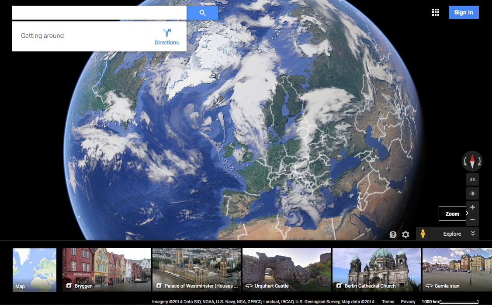
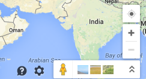

In the introductory lecture, a number of examples of Google Maps were
illustrated. We'll revisit some of these briefly, in order to
consider the feature set of Google Maps. New features have
been added steadily since the introduction of the service (a major update occurred in 2014), and thus
this review of capabilities may not be completely up to date! Google Maps offers a number of different map views.
The
available views vary depending on both country and location,
with the best developed services being in the US. The UK data
sets are not as extensive as those in the US, but have generally been
strongly supported by Google.
Google's map system is reachable via URLs including http://maps.google.co.uk and http://google.co.uk/maps.
Equivalent URLs exist for google.com, and for many if not all of
Google's various international sites. These are broadly the same,
although tend to be optimised for the appropriate audience. Thus, the
maps available through http://maps.google.co.jp use Japanese characters for place names by default.
In 2014 Google Maps changed the look and feel of their product. There are two main views: the 'Map' view and the 'Earth' (satellite) view. The figure below shows a typical screenshot [NB some screenshots in this module are from a slightly earlier incarnation of Google Maps for reasons that will be apparent...] showing the default Map view.
An icon in the bottom left hand corner can be used to switch to the Earth view.

At the top right of the screen is a text box that allows you to both switch to terrain view and search for directions. If you click on the Get Directions box, you will see this:

In the bottom right hand corner are the following icons:

The small yellow man icon opens up the options for Street View and Photo Sphere. These are images that are both captured by GoogleVans of streets etc and contributed images by users. Next to the yellow man icon, images show popular locations (it is not clear if these are generated through Google searches/ranking or are linked to advertising). If you click on this option at a global scale, you can see some obvious gaps in the coverage, such as China and North Korea. As well as being able to zoom in and out, Google Maps allows you to tilt the maps for new perspectives!

If you wish Google Maps to show and use your location (this allows them to customise directions and target services and attractions located near to you), you can click on the icon in the bottom right that looks like a compass.
Finally, if you really don't like the new Google Maps layout, select the cog icon at the bottom of the screen and you can default back to the 'classic'.
Task: Bring up Google Maps and zoom to the world view.